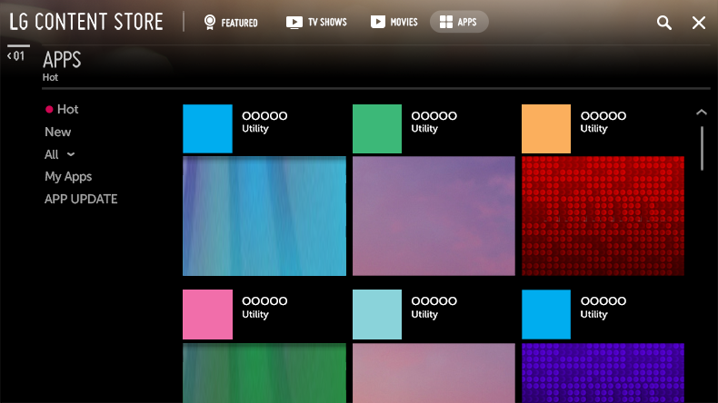
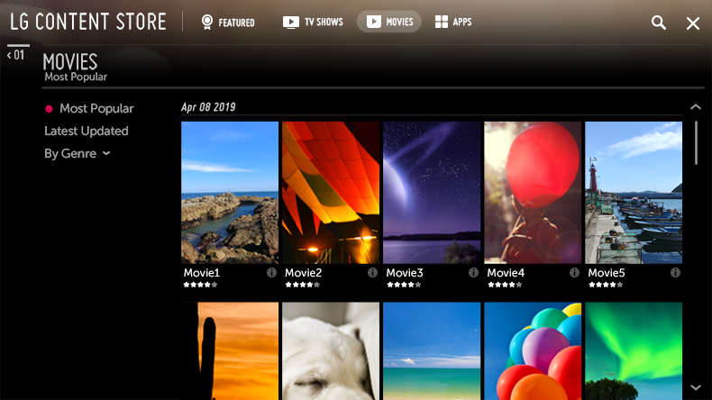

Instalación de aplicaciones
Puede instalar varias aplicaciones en la TV desde LG Content Store.

-
Pulse el botón
 del mando a distancia.
del mando a distancia.
- Se inicia LG Content Store.
-
Seleccione la categoría APPS que se muestra en la parte superior de la pantalla.
Se mostrará la lista de aplicaciones disponibles para la categoría seleccionada. - Seleccione la aplicación que desee configurar de la lista.
- Lea la información de la aplicación y pulse instalar.
- Una vez que se ha completado la instalación, puede iniciar la aplicación inmediatamente.
Las categorías disponibles pueden variar en función del país y del estado del servicio.
Si en su TV no existe espacio de almacenamiento suficiente, puede instalar las aplicaciones conectado un dispositivo de memoria externa.
Algunos dispositivos USB podrían no ser compatibles o no funcionar correctamente.
No es posible utilizar una memoria USB que contenga aplicaciones de otras TV.
Puede eliminar las aplicaciones que haya descargado en Mis Apps del elemento APPS.
Visualización de contenido VOD
Podrá disfrutar inmediatamente de series, películas y más contenido en streaming en tiempo real.

-
Pulse el botón del mando a distancia.
- Se inicia LG Content Store.
-
Seleccione la categoría deseada entre las categorías que se muestran en la parte superior de la pantalla, como Programas de TV y Películas.
Se mostrará la lista del contenido disponible para la categoría seleccionada. - Seleccione un elemento de la lista.
-
Puede reproducir el contenido que desee.
Es posible que se necesite una aplicación para reproducir el contenido. Si esta no está instalada, instálela para poder reproducir el contenido.
Esta función solo está disponible en algunos modelos.
Las categorías disponibles pueden variar en función del país y del estado del servicio.
Para ver información detallada sobre el contenido, seleccione el título en la parte inferior del área .